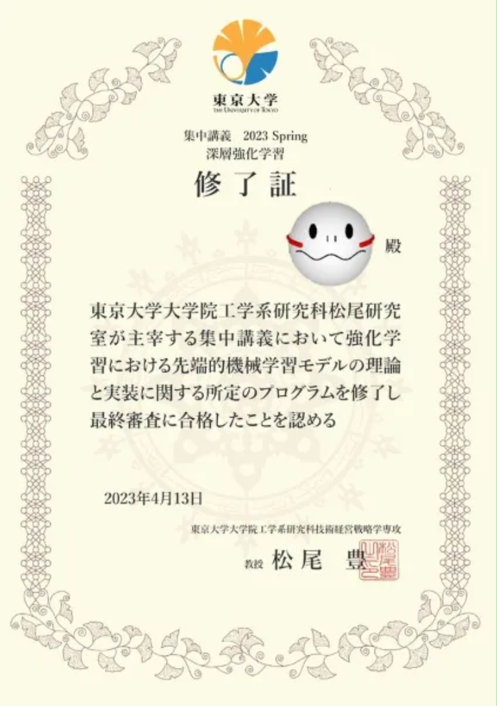
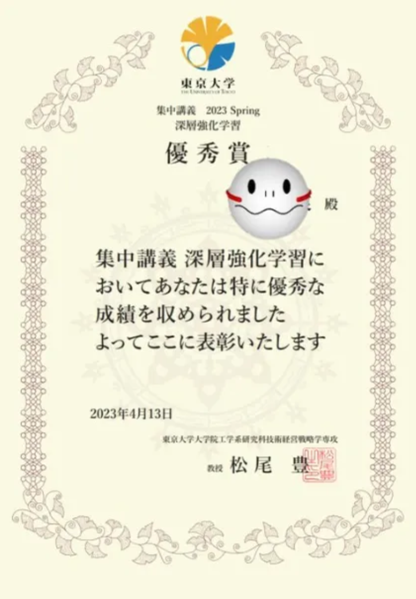

Dueling DDQN 格ゲーAI
東大松尾研主催の深層強化学習スプリングセミナー2023に参加
講義で扱ったDueling DDQNを用いて格ゲーAIを作成。
映像のP1が作ったAI
優秀賞ももらう↧


東大松尾研主催の深層強化学習スプリングセミナー2023に参加
講義で扱ったDueling DDQNを用いて格ゲーAIを作成。
映像のP1が作ったAI
優秀賞ももらう↧
デクス@roax_uec19と参加したBnscup2023の時に作成
オブジェクト指向とクラス継承の活用で物理エンジンの導入がとても簡単にできたのが一番の思い出
(物理エンジンを使いやすくライブラリ化したデクスには感謝しかない)
味方を追いかけている大量の敵を倒すと、回復アイテムと爆弾を落としてくれて、それをうまく使いながら高得点を目指していくゲーム
（ビルドにはBulletが必要(ここを参考)）
ビジュアル情報処理の最終課題で提出した、Processingの３Dシューティングゲーム
ただ出てくるUFOを打ち落としてスコアを多く獲得するゲーム。たまに金のUFOが出てくる。